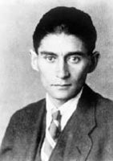

(1883 – 1924)

Ömrünü memur gibi çalışarak geçiriyordu, ama geceleri dünya edebiyatının başyapıtlarını üretiyordu. İnsan olmanın acısını öyle ağır yaşıyordu ki en önemli öyküsünün konusu, "bir sabah uyandığında kendini böceğe dönüşmüş olarak bulan bir adam"dı. Franz Kafka ölmeden önce tüm yazdıklarının yakılmasını vasiyet ederek arkadaşı Max Brod'a teslim etti, neyse ki arkadaşı ona ilk kez ihanet etti ve dünya edebiyatı Kafka'nın yazdıklarından mahrum kalmadı.
3 Temmuz 1883 tarihinde doğan Franz Kafka, Praglı bir Yahudiydi. Prag o zamanlar Avusturya-Macaristan İmparatorluğu'nun toprağıydı ve Kafka Yahudi olduğu için Almanlar tarafından sevilmiyor, Almanca konuştuğu içinse Çekler tarafından hor görülüyordu. Kafka'nın babası, taşralı Çek proletaryasından geliyordu. Evlendikten sonra zengin bir tüccar olmayı başardı. Annesi ise varlıklı, aydın bir Alman Yahudi ailesinden geliyordu. Edebiyat tarihçileri Kafka'nın huzursuz, çekingen, alıngan, iletişim kurmakta güçlük çeken duygulu kişiliğini Yahudi asıllı, Almanca konuşan bir Çek oluşuna; bu sosyal ve kültürel çevrede yaşadığı yabancılaşmaya bağlar. Aile Prag'daki Alman topluluğuyla kaynaşmaya çalıştı, Kafka'nın üç kız kardeşi Alman okullarına gitti, Kafka Almancayı anadili olarak kullandı. Tüm çocukluğu boyunca kendisini "hiçbir şey'' gibi hisseden Kafka, büyüdüğünde de bu düşüncesinden vazgeçmedi. Babasıyla başlayan otorite fobisi onun hemen hemen tüm kitaplarına yansıdı. Otorite karşısında, zaten zayıf olan bedeninin iyice küçülmeye, yok olmaya başladığına inandı. Bu düşünce Kafka'yı ömür boyu bırakmadı.
Kafka 1901'de babasının zoruyla Prag Üniversitesi'nde hukuk öğrenimine başladı; bir yandan da sanat tarihi ve Alman edebiyatı derslerine girdi. 1906'da hukuk eğitimini tamamladı. Önce stajını yaptı. 1907'de o zamanlar çok ünlü olan Assicurazioni Generali adlı İtalyan sigorta şirketinde çalışmaya başladı. İleride eserlerini yakılmak üzere teslim edeceği Max Brod ile bu yıllarda dostluk kurdu, onun sayesinde Prag'daki edebiyat çevrelerine girdi. Felix Qeltsch, Oskar Baum, Gustav Janouch ve Franz Werfel gibi edebiyatçılar ile tanıştı. Gündüzleri sıradan bir memur gibi işine gidiyor, geceleri ise "ölümden bile derin bir uyku"ya benzettiği yazma işinde yoğunlaşıyordu. Avrupa'nın çalkantılı hâli onun öykülerini gittikçe karanlıklaştırdı. İnsanın kurtuluşuna olan inancı azaldıkça daha çok yazmaya başladı. Şato, Dava ve Amerika hep bir arayışın, fakat bulamamanın romanı oldu. Kafka'nın bir hayli tamamlanmamış romanı da vardır.
1908-1912 yılları arasında siyasal ve toplumsal olaylara ilgi duymaya, sık sık önemli Çek siyaset adamlarının toplantılarına katılmaya başladı. Yahudilikle ilgilenip İbranice öğrenmeye de bu yıllarda yöneldi. Max Brod ile birlikte Riva, Paris, Weimar ve İtalya gezileri yaptı. İlk büyük aşkı, Felice Bauer'di (1887-1960). 1912 ile 1914 arasında Felice Bauer ile iki kez nişanlanmasına rağmen, evlenemedi. Bu ilişkiden geriye 500'ün üzerinde mektup kaldı. Bu mektuplar Kafka'nın ölümünden uzun yıllar sonra, ilk kez 1967'de yayınlandı.
1912 öncesi yazdığı erken dönem yapıtları; Bir Savaşın Tasviri, Taşrada Düğün Hazırlıkları gibi uzun öyküleriyle birlikte bir dizi kısa düzyazıydı. Kafka'nın kendi aşağılık kompleksleriyle yoğurduğu bir iç dünyası vardı. Kendi bedeninden değil hoşnut olmak, adeta tiksinmekteydi. Bir başyapıt sayılan Dönüşüm'ün efsanevi ilk cümlesi şöyledir: "Gregor Samsa bir sabah korkulu bir düşten uyanınca, yatağının içinde kendini korkunç bir hamamböceği olarak buldu...''
Kafka'nın hayatı baştan sona güçlü ve sert bir baba imgesinin gölgesinde geçti, babası ile aralarında hiçbir zaman Kafka'nın özlediği ilişki kurulamadı. Babasına yazdığı altmış bir sayfa uzunluğundaki mektupta, bu süper-ego baskısı bütün çıplaklığıyla gözler önüne serilir. 1912'de bir gecede yazdığı Hüküm adlı öykünün odağında bir baba-oğul ilişkisi vardır. Yine 1912'de yayımlanan Dönüşüm, Kafka'nın en çarpıcı uzun öyküsü olarak okura sunulur. Kafka'nın ilk romanının birinci bölümü Kayıp adı altında 1913'te yayımlandı; roman Kafka'nın ölümünden sonra Amerika adı altında, tamamlanmış hâliyle okura sunulmuştur.
Kafka ikinci büyük romanı Dava'yı, Felice ile nişanını ikinci kez bozduğu 1914 yılında yazmaya başladı. Ceza Sömürgesi'ni de aynı yıl kaleme aldı. 1922'de yazmaya başladığı Şato da tamamlanmadan kaldı. Üstünde katlanılmaz bir ağırlığı olan babasından uzaklaşmak ve evlenmek istedi. Fakat onun gibi kompleksler içinde yüzen bir adamın altından kalkabileceği bir iş değildi bu. Kadınlarla mektuplaşmaktan başka birşey yapamadı. 1914'te patlak veren I. Dünya Savaşı'nda zayıf bünyesi nedeniyle askere alınmadı. Bu yıllar yazar olarak tanınmaya başladığı yıllardı. 1915'te Carl Sternheim, kendisine verilen Fontane Ödülü'nün Kafka'ya verilmesini istedi.
1917 Kafka'nın kötü haberi aldığı yıldı. Vereme yakalanmış, hayatının akışı altüst olmuştu. 1920'de Milena Jesenka ile mektuplaşmaya başladı. Kafka'nın Almanca yazdığı eserleri Çek diline çevirmek için ondan izin isteyen Milena, Kafka'dan on iki yaş küçüktü ve evliydi. Bir araya gelmeleri olanaksız olan bu iki insan uzun yıllar mektuplaştı. Milena'ya yazdığı mektuplar, tıpkı daha önce Felice Bauer'e yazdıkları gibi Türkçeye çevrilmiştir. Mektuplaştıkları üç yıl boyunca sadece iki üç kez görüşebildiler ve bu görüşmeler Kafka'yı üzmekten başka bir işe yaramadı. Yine de onun yaratıcılığını olumlu yönde etkilediği rahatlıkla söylenebilir. Daha sonraları edebiyat tarihinin güzide eserlerinden biri sayılacak olan Milena'ya Mektuplar'da Kafka şöyle dile getirir durumunu: "En çok seni seviyorum diyorum ama gerçek sevgi bu değil sanırım sen bir bıçaksın, ben de durmadan içimi deşiyorum o bıçakla dersem gerçek sevgiyi anlatmış olurum belki..." Milena bu mektupları 1939 yılında yayımlaması için yakın arkadaşı Willy Haas'a verdi ve 17 Mayıs 1944'te Almanya'daki bir toplama kampında öldü.
Tüm karamsarlığına rağmen Kafka'nın romanlarında her zaman bir ümit ışığı görmek mümkündür. Dava'nın yüzlerce sayfa boyunca suçunu öğrenmek için çırpınıp duran zavallı kahramanı K. sonunda idam edilir. Fakat infaz sırasında karşı binanın penceresinden ışıklar içerisinde bir adam çıkar ve kollarını K.'ya uzatır. Elle tutulur bir yararı olmayan, zayıf bir umuttur bu; ama bir umuttur işte ve insanın sahip olduğu biricik şey de budur aslında.
Kafka, sayısı az olan arkadaşları arasında en çok Max Brod'u severdi. Dostu Max'tan, yazdığı her şeyi ölümünden sonra yakmasını istedi. Yazdıklarının gereğinden fazla kişisel, başkalarının ilgisini çekmeyecek ve değersiz yazılar olduğunu düşünüyordu. Max ise onunla aynı fikirde değildi ve Kafka'nın ölümünden sonra karışık halde bulunan binlerce sayfa metni toplayıp düzenleyerek yayımladı.
Sağlığının kötüye gitmesi üzerine 1922'de emekliliğini isteyen Kafka, Dora Diamant adlı 20 yaşında bir kızla iki yıllık kısa bir mutluluk yaşadı. 1917 Ağustosu'ndan beri devam eden kanlı öksürükler sonucu Franz Kafka, 3 Haziran 1924 günü Viyana yakınlarındaki Kierling Sanatoryumu'nda hayata gözlerini yumdu.
Seçme Yapıtları: Bir Savaşın Tasviri (1904/1905 – Cem Yayınevi, 2000), Taşrada Düğün Hazırlıkları (1906/1907 – Cem Yayınevi, 2000), Gözlem (1913), Kayıp (1911/14), Dönüşüm (1912 – Can Yayınları, 2002), Ceza Sömürgesi (1914), Dava (1914) , Köy Öğretmeni (1915), Şato (1922 – Cem Yayınevi, 2012)